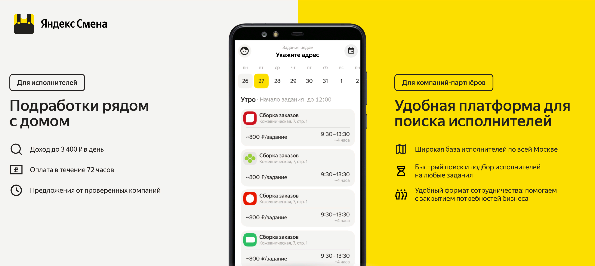
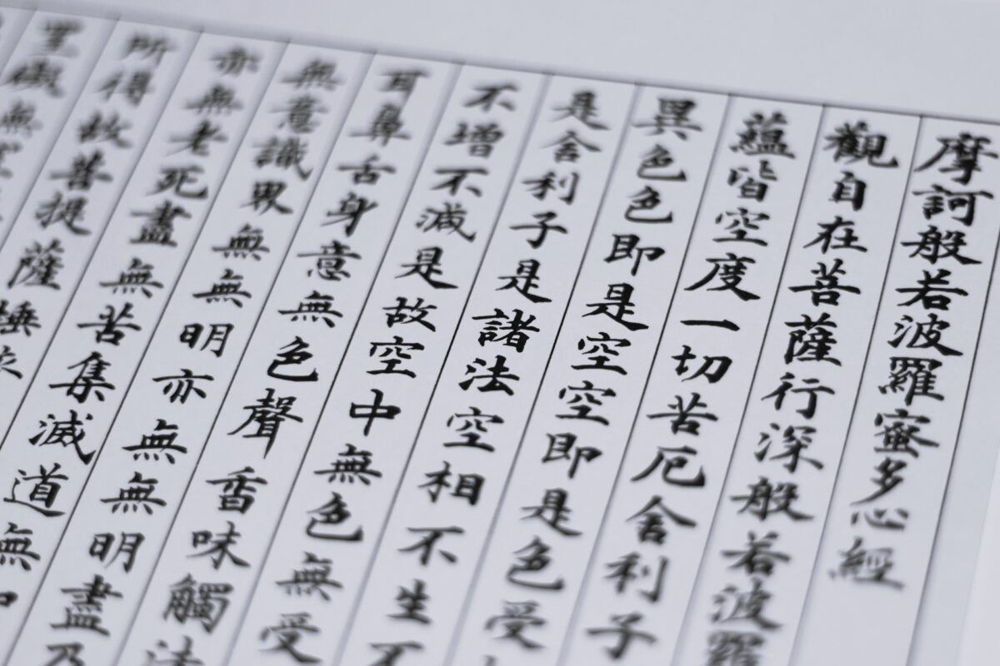
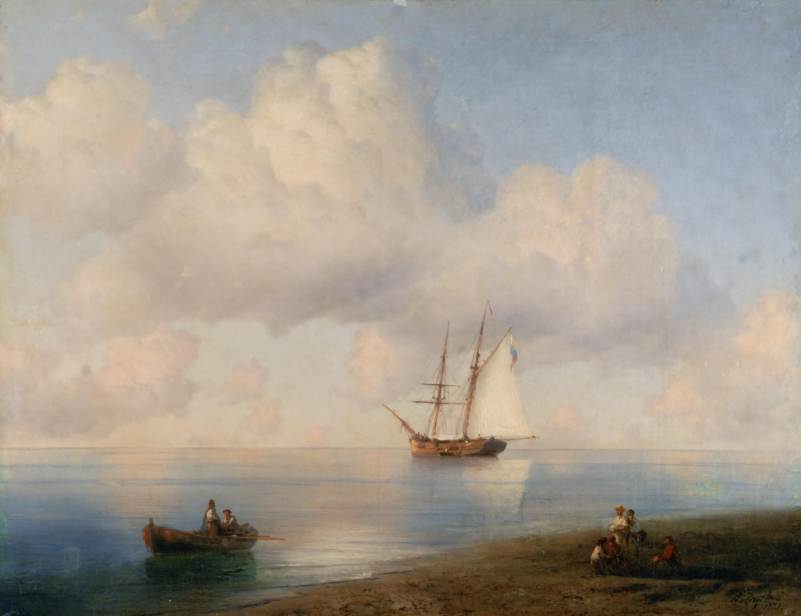

Учеба в вузе
Я учусь на 3м курсе факультета прикладная математика в Национальном исследовательском университете «Высшая школа экономики». Учеба состоит из лекций, семинаров, домашних заданий и ежегодных проектов. Учиться, разумеется, очень непросто, поэтому свободного времени на остальные дела почти не остается.
| Понедельник | Вторник | Среда | Четверг | Пятница |
|---|---|---|---|---|
| Численные методы | Проектный семинар | Прикладные задачи анализа данных | Теория случайных процессов | |
| Численные методы | Основы веб-программирования | Прикладные задачи анализа данных | Теория случайных процессов | |
| Теория случайных процессов | Основы веб-программирования | Компьютерный практикум | ||
| Уравнения математической физики | Уравнения математической физики |
Работа разработчиком в Яндексе
Вот уже больше года я работаю мобильным разработчиком в Яндексе. Пишу на языке Dart с использованием фреймворка Flutter. Занимаюсь разработкой приложения для поиска быстрой подработки - Яндекс Смена.
main() {
runApp();
}
Изучение японского языка
Я учу японский язык второй год и в данный момент активно готовлюсь к сдаче экзамена JLPT N4. Изучение японского языка требует постоянной практики в чтении, письме, аудировании и разговоре. Для меня изучение иероглифов является самой сложной частью, требующей особого терпения и настойчивости.
Бытовые дела
Ну что тут еще сказать? Все как у всех.
Уборка
Люблю убираться, так как процесс наведения порядка помогает мне чувствоваться себя организованней в остальных сферах жизни. Кроме того чистота создает уют в доме.
Другое
Иван Айвазовский
